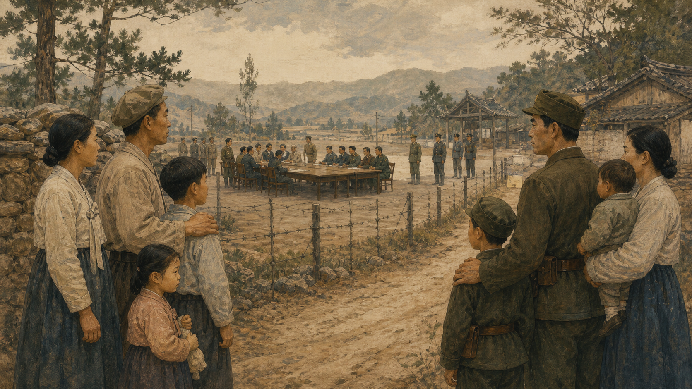

关键地点关系
1945年8月10日夜里，华盛顿一间办公室还亮着灯。两名美国军官摊开一张《国家地理》地图，接到的任务简单得近乎荒唐：日本即将投降，必须赶快决定苏军与美军分别到朝鲜半岛哪里接受日军投降。时间只有几十分钟。地图上的北纬三十八度线穿过半岛中部，也把首都汉城留在南边。军官们画下了它。没有朝鲜人坐在桌旁，也没有人知道，这条为了处理受降而提出的线，会在八十多年后仍然把列车、电话和家谱截成两半。
这条线起初是临时受降安排，并不是朝鲜人投票选择的国界。苏联接受北方日军投降，美国接受南方日军投降；随后两种占领制度、两套政治组织和冷战竞争把临时线变成了难以跨越的现实。把“38线”只当成地图上的一道笔迹，就会漏掉最关键的一层：一条外部大国先画出的行政线，怎样在几年内长成两个互相敌对的国家。

在线出现以前，半岛已经被别人占领
若从那张地图开始，故事会显得像一次偶然的划线事故；但线之所以能够落下，是因为朝鲜人早已失去决定自己命运的国家权力。1910年，日本正式吞并大韩帝国。此后二十五年，殖民政府修铁路、建工厂、调查土地，也镇压政治组织，要求学校与公共生活服从帝国。现代化设施与殖民统治并不矛盾：铁路可以运送乘客，也可以运走粮食与军队；工厂可以训练技术工人，也可以服务日本的战争。
殖民年代也制造了不同经验。有人参加1919年的“三一运动”，有人在中国、苏联或美国流亡；有人加入游击队，有人在殖民机构中谋生，也有人被征工、征兵或被迫成为日军“慰安妇”。这些经历在1945年以后并没有自动消失。谁算抗日者，谁算合作者，土地应不应该没收，国家应该由怎样的政治力量领导，都成为紧迫问题。后来南北双方各自写历史时，往往突出有利于自身合法性的那一部分。
第二次世界大战接近尾声时，同盟国在1943年《开罗宣言》中说，朝鲜“在适当时候”将获得自由与独立。对长期等待独立的人来说，“适当时候”却是一个危险的词：它没有说明由谁治理过渡、过渡多久，更没有建立让朝鲜人共同作决定的程序。1945年8月，苏联依照对日作战安排进入半岛北部，美军距离尚远。仓促提出三八线，既是军事计算，也是美国担心苏军控制整个半岛的政治计算。
史料怎样说，后人怎样读
美国档案把三八线描述为日军受降的临时分界。这个事实不能自动证明策划者早已打算永久分裂朝鲜；同样，“临时”也不能抹去外部大国未征求当地人同意的事实。理解动机与判断后果，是两个不同问题。
一条受降线，长成两个政治世界
1945年9月，美军在南方接受日军投降；苏军已在北方展开接管。最初，三八线不是国际边界，没有护栏，也没有今日那样的雷区。农民仍想去另一边赶集，亲戚仍会设法过线。但两个占领区很快形成不同的行政节奏。北方在苏联支持下建立地方人民委员会，进行土地改革，把日本人及地主的土地重新分配；南方的美国军政府则较多保留原有行政人员和警察系统，引发许多反殖民人士的不满。
半岛并不是天然地分成左派北方与右派南方。南方有强大的左翼组织，北方也有基督徒、商人和地主。人口还在移动：害怕北方改革或政治清洗的人向南，躲避南方镇压或追求革命的人向北。每一次迁移都让两个地区更不相同，也给留下的人贴上可疑标签。许多家庭的分裂，不发生在战争炮火中，而发生在“先去那边看看”的一次出门里。
美苏原先讨论由两国组成联合委员会，协助建立统一的临时政府，再经过托管走向独立。但“哪些朝鲜团体可以参加”、托管是否等于新的殖民统治等问题不断引发冲突。冷战气氛又迅速变冷：欧洲、伊朗、土耳其和中国内战都影响美苏判断。双方越来越担心，一旦退让，整个半岛会落入对方阵营。一个共同国家需要双方先信任程序，而占领政治恰恰在消耗这种信任。
1947年，美国把问题交给联合国。联合国计划监督全半岛选举，但委员会无法进入北方。1948年5月，选举只在南方举行；8月，大韩民国成立，李承晚任总统。9月，朝鲜民主主义人民共和国在北方成立，金日成任首相。两边都没有把自己说成“半个国家”，而是都声称代表整个朝鲜。于是，三八线两侧出现的不是互相承认的邻国，而是两个都要完成统一的竞争政权。
1950年以前，和平已经布满裂缝
教科书常把朝鲜战争起点写成1950年6月25日，这个日期准确，却容易让人误以为此前半岛相安无事。事实上，南方发生过大规模罢工、起义与镇压。济州岛从1948年开始的冲突造成大量平民死亡，丽水、顺天也爆发军人拒绝执行镇压命令的叛乱。北方的反对力量同样遭到压制。新的国家机构一边建立，一边用“叛徒”“反动派”“赤色分子”这些标签整理社会。
三八线附近还不断发生小规模交火。南北领导人都公开谈统一，也都相信时间未必站在自己一边。李承晚想“北进统一”，金日成则寻求苏联和中国同意，以军事方式解决分裂。外部大国不是木偶师，半岛领导人也不是没有意志的棋子；更准确的图景是：地方领导人主动游说，大国根据全球战略决定给予、限制或改变支持。
北方叙事强调什么
朝鲜官方长期把战争解释为反击美国及南方挑衅、保卫祖国的战争，并突出抗美与自主。这个说法构成其国家合法性的一部分。
档案研究显示什么
苏联档案开放后的大量研究显示，1950年6月25日由北方军队发动大规模越线进攻，金日成事前得到斯大林许可，并判断战争可迅速结束。解释此前冲突，不等于模糊这次进攻的责任。
1949年，美苏大部分占领军撤出，留下的两个国家都缺少共同接受的边界和安全安排。南方政府内部镇压与政治动荡，让平壤判断南方可能迅速崩溃；中国共产党在内战中获胜，也使一些有实战经验的朝鲜族部队返回北方。与此同时，美国的公开防务表述模糊，进一步诱发误判。战争并非不可避免，却在一串“对方不会抵抗太久”“盟友一定会支持”“行动能够控制”的判断中变得越来越可能。
父子暂停一下：谁让一条线变成边界？
可以分别写下四类行动者：美国、苏联、南北政治领导人、普通民众。每一类人拥有什么选择，又受什么限制？如果每个人只为眼前安全作出“合理”决定，为什么合在一起可能得到灾难结果？
三年战争，前线把半岛来回碾过
1950年6月25日清晨，北方军队跨越三八线。汉城很快失守，南方军队和政府一路后撤到半岛东南端的釜山周边。联合国安理会通过决议，认定进攻破坏和平，随后建立以美国为主的联合国军。苏联当时因抗议联合国仍由中华民国代表中国而缺席，没能使用否决权。一个关于席位的外交抵制，意外改变了战争的国际程序。
9月，麦克阿瑟指挥仁川登陆，战局逆转。联合国军越过三八线向北推进，逼近鸭绿江。北京多次警告，若外国军队抵近中国边境将介入。10月起，中国人民志愿军入朝作战，联合国军后退，汉城再次易手。到1951年中，战线大致稳定在原三八线附近。短短一年里，同一座城市可以数次换旗；对居民来说，“你给哪一方带过路、做过饭、登记过姓名”都可能在下一次易手时成为罪证。
战争不是地图上两支箭头的移动。大规模轰炸摧毁北方城市和基础设施，南北军警都发生过处决俘虏或被怀疑者的暴行，难民队伍也可能被当作敌军掩护。寒冷、饥饿、疾病与失散穿过政治阵营。许多孩子日后只记得母亲拉着手赶路、桥上拥挤的人群和突然不见的兄弟。国家记忆会建立纪念碑，家庭记忆却常藏在不敢追问的一句话里。
1951年开始的停战谈判拖了两年多，最难的问题之一是战俘遣返。共产主义一方主张全部遣返，联合国军主张尊重战俘个人选择；双方都把战俘选择当作制度优越性的证明。战俘本人则夹在宣传、恐惧与未来报复之间。谈判桌上的一个词，可能决定一个人回到故乡、前往台湾、留在南方，或从此再见不到家人。
停火了，但和平没有签字
1953年7月27日，板门店的双方代表在没有握手的情况下签署《朝鲜停战协定》。协定让公开敌对行动停止，要求双方从军事分界线各退两公里，形成约四公里宽的非军事区，并建立监督与协商机制。签字者是朝鲜人民军、中国人民志愿军和联合国军司令部代表；韩国总统李承晚反对在未统一的情况下停战，韩国没有在协定上签字。
非军事区名字听来像没有军队，现实却是两侧部署高度军事化。铁丝网、岗哨、地雷和扩音器把一条纬线改造成厚重的边境空间。真正的军事分界线也不再完全沿北纬三十八度：战争结束时的接触线在东部偏北、西部偏南。海上边界则没有在停战协定中得到双方一致确认，为后来的海上冲突留下争议。
停战后，北方与中国结盟，南方与美国签订共同防御条约，美军继续驻扎。安全困境由此固定下来：一方说自己的军备是防御，另一方看到的却是进攻能力，于是追加军备。每一次加固都能在国内被解释为保护人民，同时使对面更不安心。边界不只阻挡军队，也开始塑造两个社会对危险的想象。
读停战协定时留意动词
协定使用的是“停止”“撤离”“建立”等军事动词，并建议有关各方召开政治会议解决外国军队撤出和朝鲜问题。后续政治会议没有达成统一或和平安排。文件完成了它最直接的任务，却没能完成更大的政治任务。
同一种语言，进入两套国家生活
1953年的两边都是废墟。北方拥有殖民时期较多的重工业与水电基础，在苏联、中国及社会主义阵营援助下恢复很快；南方起初贫穷、政治专制，也依赖美国援助。若只从1950年代眺望，没人能轻易断言几十年后的差距。历史结果不是民族性格的证明，而是制度、国际环境、政策选择与偶然冲击长期叠加的结果。
韩国在朴正熙时代推动出口工业化，政府引导信贷，企业集团扩大，劳动者长时间工作。经济增长带来教育、城市化与中产阶层，也伴随政治压制。1980年光州民主化运动遭武力镇压，成为重要记忆；1987年大规模抗争推动总统直选。把韩国故事只写成“自由市场创造奇迹”，会漏掉国家规划、美国安全支持和劳动者代价；只写成“独裁发展”，又会漏掉社会争取民主的力量。
朝鲜建立高度集中的计划经济和领袖体制，以主体思想强调政治自主，后来又把军事置于国家资源配置的重要位置。冷战时期它从盟友获得能源、技术与市场；苏联解体后，这套交换体系突然断裂，经济和粮食体系遭受重创。南北差距从此不只是收入数字，也体现在夜间灯光、医疗供应、旅行可能与信息来源上。
然而“两个社会”不能抹去共同文化，也不能假定所有人都以同样方式认同统一。老一代失散者常把统一理解为回家；年轻韩国人可能先想到税负、就业与安全；朝鲜官方把统一长期写入政治目标，近年来官方表述又出现重大调整。民族共同体、国家公民身份与个人生活利益，在同一个人心中也可能彼此拉扯。
边界最深的地方，是一张没有寄出的家书
朝鲜战争与长期分治使大量家庭失去正常通信。南北在缓和时期举行的离散家属会面留下了许多可核查的影像与记录：高龄亲属在限定时间内相见，交换照片、药品和家庭消息，之后又被迫分离。名额有限、等待漫长，政治关系转冷时会面就中断。这不是抽象象征，而是由国家关系决定的真实家庭时间。
边界还制造了不同种类的越界者。有人在战争中被带走，有人后来从朝鲜经中国辗转抵达韩国，也有人因渔船、飞机或军职意外跨线。每个人的故事都容易被双方宣传包装成“选择了正确制度”或“遭到敌方绑架”。研究者必须同时听个人证词、核对时间与制度背景，并承认证词可能受创伤、记忆和安全顾虑影响。尊重讲述者，不等于放弃核实。
会面名单本身也在和时间赛跑。申请人要提交父母、兄弟姐妹或子女的姓名、出生地和旧地址，再由双方红十字组织尝试确认对方是否仍然在世。许多人等到白发苍苍也没有被抽中；有人终于得到消息时，亲属已经去世。一次会面常被新闻镜头写成“民族亲情战胜政治”，但几天后的再次分离提醒人们：没有稳定通信、探亲和邮件制度，团聚仍是由政府临时批准的例外，而不是家庭可以自由行使的权利。
非军事区因为人类活动受限，意外成为野生动物栖息地。这个常被称颂的“生态奇迹”也带着悖论：自然空间的形成依靠地雷和战争风险。游客在观景台用望远镜向北看，可能看见山、村庄和旗杆，却看不见普通人的完整生活。边界把对面变得既近又抽象，越抽象，就越容易只剩敌人形象。
父子暂停一下：如果只允许带一件东西
假设你要离家三天，却在七十年后仍不能回来，你当时会带什么？再问一步：国家纪念战争时偏爱旗帜、将领和胜利，家庭为何更可能记住饭碗、照片、门钥匙和一句没说完的话？
核武器、制裁与一次次打开又关上的门
冷战结束后，半岛分裂没有随柏林墙一起消失。朝鲜发展核武器和弹道导弹，称其是防止政权被外部推翻的必要威慑；韩国、美国和日本则认为这些能力直接威胁地区安全。联合国安理会通过多轮制裁，限制武器、金融、能源和贸易。制裁的目标是改变国家行为，但国家可以把成本转移给社会，普通人的粮食、药品和生产资料也可能受到间接影响，因此联合国另设人道豁免。
外交并非从未成功。1991年南北签署《基本协议》，2000年和2007年举行首脑会谈，开城工业园一度让韩国资本与朝鲜劳动力在边境合作。2018年，南北与美朝首脑会晤带来罕见缓和，板门店的领导人跨过军事分界线。但声明中的“无核化”“和平机制”缺乏共同定义、执行顺序和互信保障，随后谈判停滞。合影可以在一天内完成，拆除几十年安全结构却要回答每一步谁先行动、怎样核查、违约怎么办。
截至2026年8月，停战结构仍在，半岛军事紧张与外交接触都可能变化。朝鲜的核与导弹能力、韩美同盟演训、地区大国竞争相互作用。写“战争明天会爆发”没有可靠依据，写“双方不会真打”同样轻率。历史给出的不是预言，而是一种警惕：误判往往发生在每一方都相信自己意图清楚、对方必会退让的时候。
线是人画的，人也要为线负责
三八线的故事常被压缩成一句话：“美苏把朝鲜一分为二。”这句话抓住了外部强权的关键责任，却遗漏了殖民遗产、半岛内部的左右冲突、南北领导人的选择和战争中的多方行动。另一种说法则把分裂完全归咎于某一方发动战争，同样解释不了1945年至1950年间两个国家怎样形成。好的历史不是寻找一个能承担所有责任的角色，而是把不同层次的责任放回各自时间。
也不能把“同一个民族”理解成统一必然发生。共同语言、祖先记忆与文化传统能够支持统一愿望，却不能自动解决制度、财产、军队、核武器、公民权和国际同盟问题。和平也未必只有一种形式：它可能从危机热线、军备管控、家属通信、人道合作开始，最后才谈政治安排。宏大的统一若没有普通人的安全，可能只是另一种强迫。
停战协定留下的机构为什么没能自然长成和平制度？一方面，军事委员会能够处理局部事件，却没有权力解决谁代表朝鲜、外国军队是否撤出、核问题如何核查等政治问题；另一方面，每次危机都会让双方更依赖同盟和威慑，缓和时期建立的热线、旅游和工业合作又可能在下一轮对抗中暂停。制度若只在关系良好时工作，就无法承担最需要它的时刻。真正稳定的和平机制必须允许对手在仍不信任彼此时也能核实事实、限制升级并保护普通人的往来。
历史教育也会决定下一代怎样理解这条线。南北教材都把殖民统治、解放、战争和国家建设连成自身合法性的故事，却选择不同英雄、责任和受难经验。学生若只学到己方始终被迫反击，就很难理解对面为何也感到恐惧。共同历史并不要求写成一份没有争议的教科书，但至少可以把原始文件、平民证词和己方犯下的暴力同时放上桌面，让记忆不再只是动员下一轮敌意的燃料。
那张1945年的地图提醒我们，临时方案最危险的地方，不是它一定错误，而是人们可能在没有后续制度时把它当作永久现实。画线只用了几十分钟，停战谈判用了两年，分裂延续了八十多年。历史时间并不公平：作决定的人可以很快离开，承受决定的人却要用一生等待。
边界从来不只在地图上。它也在一个人能去哪里、能给谁打电话、学校怎样讲述祖父母，以及国家允许哪些记忆被公开说出。
夜谈留下的六个问题
- 如果1945年的三八线确实被设想为临时受降线，划线者应为后来的永久分裂承担多大责任？
- 外部大国与本地政治领导人之间，谁更能改变1945至1950年的走向？
- 一个国家为了安全加强军备，为什么会让另一个国家更不安全？这种循环怎样打断？
- 战争纪念应如何同时容纳国家叙事、受害者经验和己方犯下的错误？
- 共同民族、不同国家与个人选择发生冲突时，哪一种身份应当优先？
- 半岛真正的和平应先追求统一、无核化、互相承认，还是普通人的自由往来？为什么？